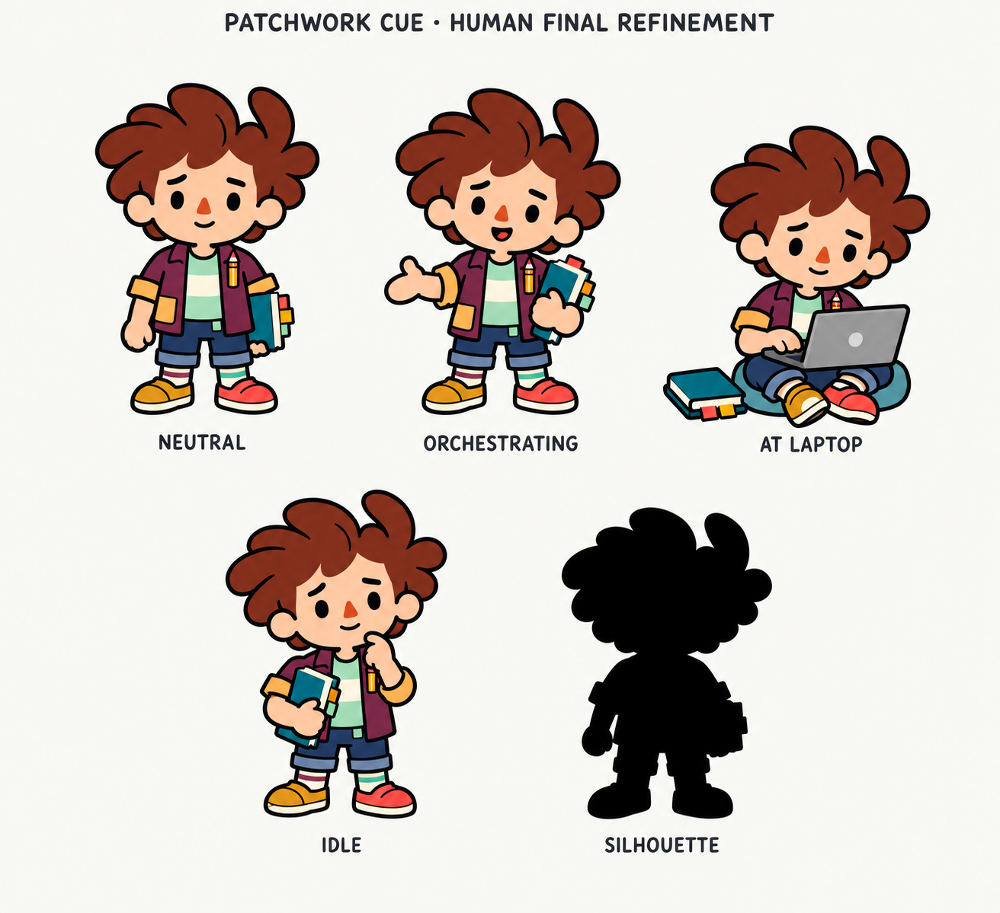
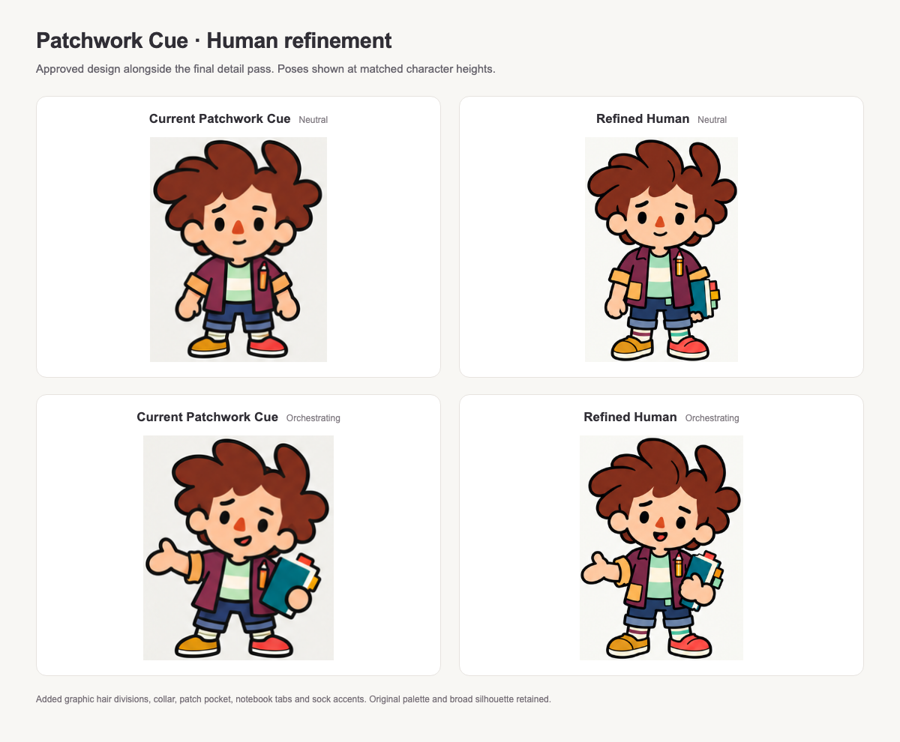
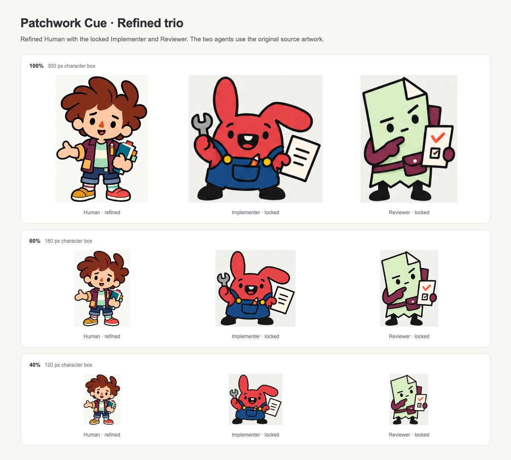

One focused detail pass. Fuller graphic hair articulation, clearer clothing layers and a tabbed notebook give the Human more individuality. The Implementer and Reviewer remain the approved artwork.
Four poses + silhouette · Before / after · Locked trio + scale checks · Image-generation prompts


